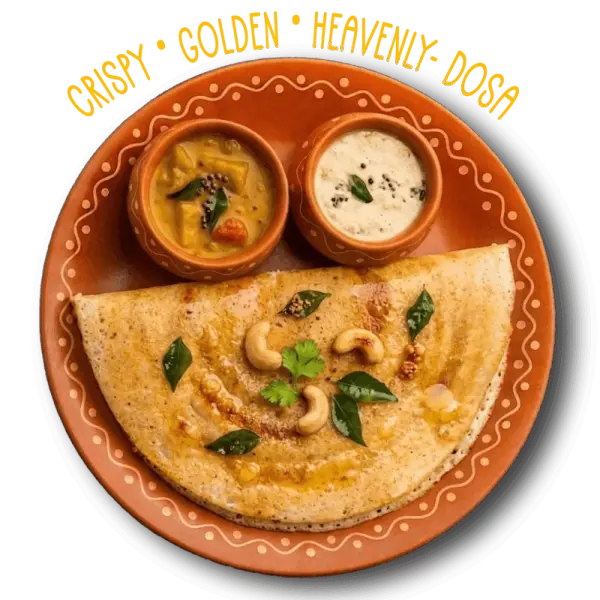
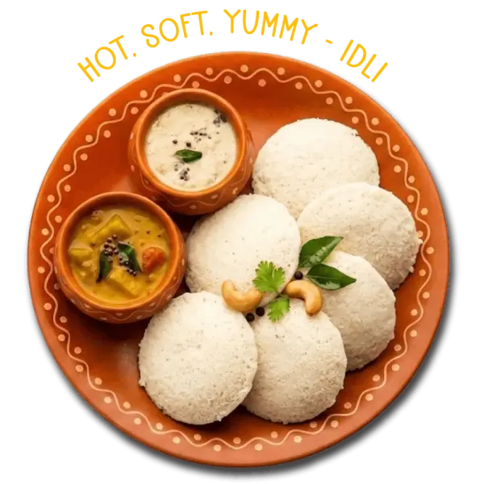
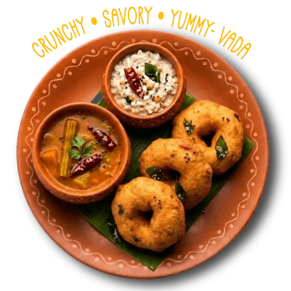
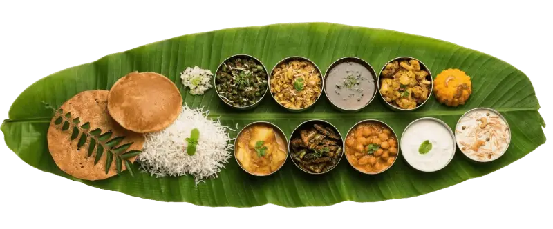
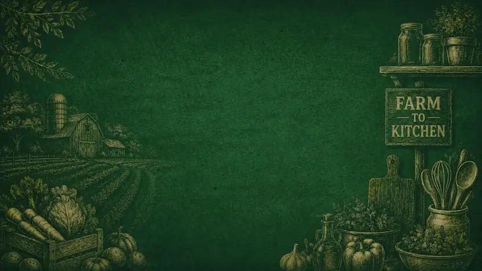
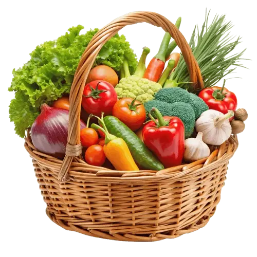
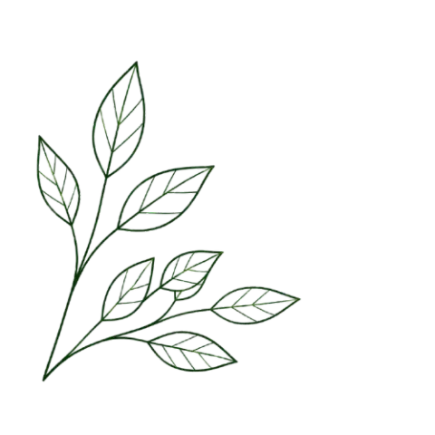
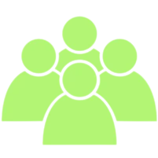

HOTEL SIDAMBARAM STORY
Best Veg Restaurant
in Pondicherry
At Hotel Sidambaram Pondicherry, every meal begins before sunrise - rice soaked, batter fermented overnight, and masalas ground fresh in-house. As a leading pure veg restaurant in Pondicherry, we serve the authentic vegetarian food you grew up loving: fluffy idlis, golden-crisp dosas, and healthy South Indian meals.
Trusted by locals and tourists alike as one of the top pure veg restaurants in Pondicherry, our hygienic, budget-friendly kitchen serves everything from banana leaf meals and filter coffee to North Indian favourites. Whether you're looking for the best breakfast in Pondicherry, a hearty lunch, or a satisfying family dinner, our vegetarian restaurant and traditional tiffin center has you covered. Visit any of our three outlets for a true family restaurant dining experience in the Union Territory of Puducherry.


Traditional Veg Hotel
in Pondicherry
Enjoy healthy farm-fresh vegetarian food at Hotel Sidambaram Puducherry. We are proud to be a preferred family restaurant in Puducherry, serving quality lunch and dinner daily.
Order Now


Hungry? Get It Hot!
Dine in with us, pick up your favourites, or get them delivered hot to your door.

Catering & Bulk
Perfect for family functions, office parties, and special events.
Enquire NowFind Us Near You
Visit our outlets at Uppalam, M.G. Road and Reddiyarpalayam — open daily 7:00 AM to 11:00 PM.
Frequently asked questions
Everything you need to know about Hotel Sidambaram — timings, outlets, catering and more.
Hotel Sidambaram is widely regarded as the best pure vegetarian restaurant in Pondicherry. Located at Dr Ambedkar Salai, Nethaji Nagar, it serves authentic South Indian meals, breakfast tiffin varieties, family dining, takeaway and catering services.
Hotel Sidambaram is located at Block No 7, Ward F, Dr Ambedkar Salai, Nethaji Nagar, Uppalam, Puducherry – 605001.
Yes. Hotel Sidambaram provides bulk catering services in Puducherry for weddings, corporate events, and family functions. Contact us for customised menus and pricing.
Hotel Sidambaram is open every day from 7:00 AM to 11:00 PM, serving breakfast, lunch, and dinner.
Hotel Sidambaram has three outlets in Pondicherry — at Uppalam, M.G. Road, and Reddiyarpalayam. All outlets serve the same 100% pure vegetarian South Indian menu.
Yes. Hotel Sidambaram is a 100% pure vegetarian restaurant. No non-vegetarian items are served on the premises.
Hotel Sidambaram is counted among the best pure veg restaurants in Pondicherry for authentic South Indian food. With three vegetarian-friendly outlets at Uppalam, M.G. Road and Reddiyarpalayam, hygienic kitchens and budget-friendly meals, it is a favourite of families, tourists and locals across the Union Territory of Puducherry.